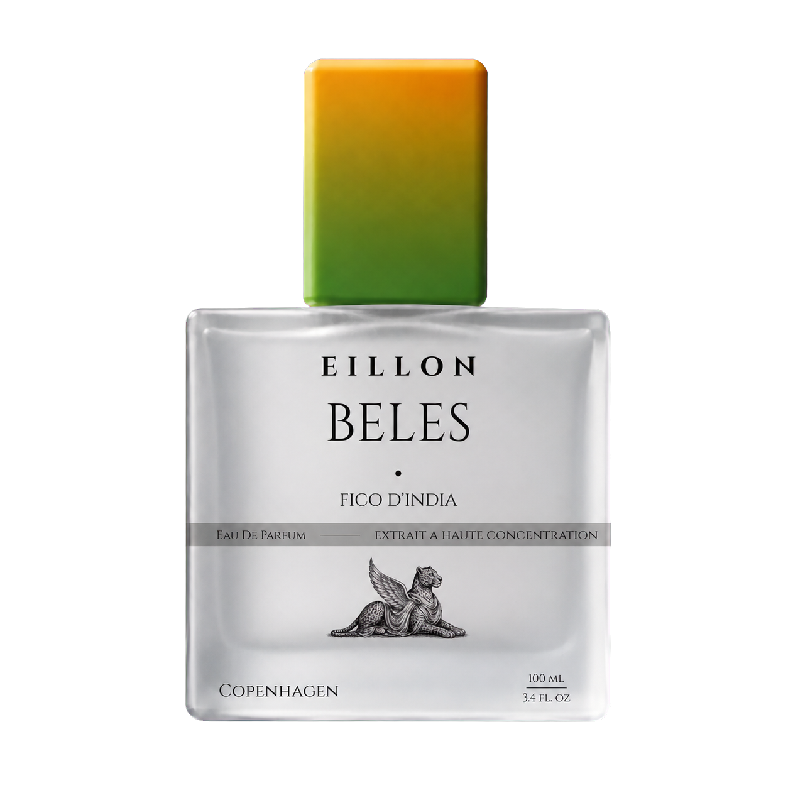
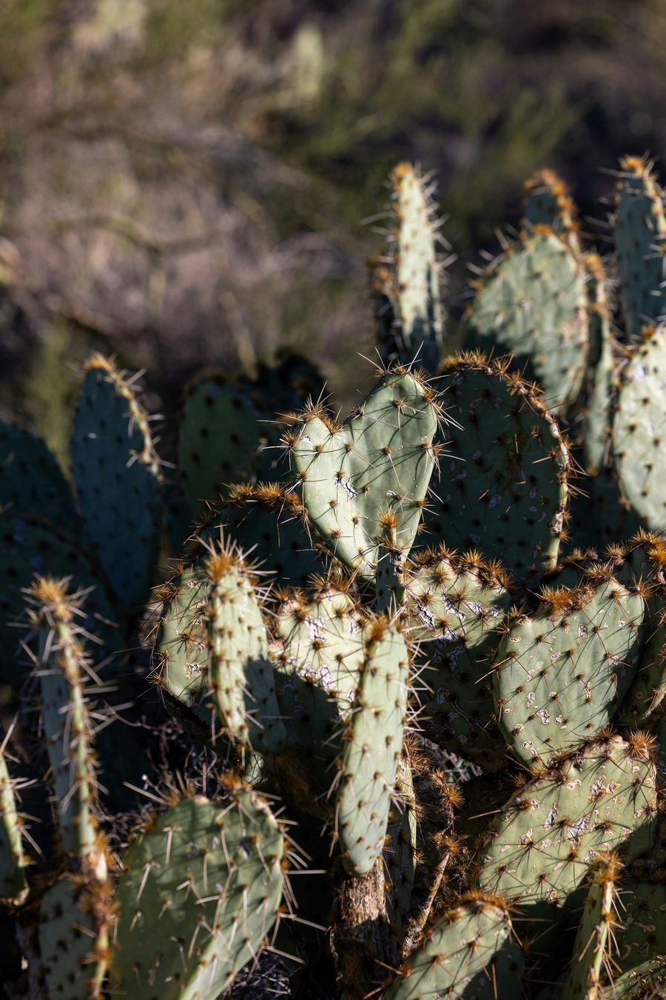

Prickly Pear · Cactus Water · Pear Skin
A bright opening — watery prickly pear, cactus water, and pear skin. Juicy, lifted, and immediately alive.
I
Boutique · Chapter I
An oil-rich prickly pear parfum — sun-warmed fruit, cactus water, hibiscus, and mineral desert air composed in Copenhagen.


€ 240
Beles · Fico d'India — an oil-rich prickly pear parfum, hand-finished in Copenhagen. High perfume-oil concentration for slow, skin-adherent wear close to skin.
Daily wear, gifting, and the fullest expression of the Beles accord.
Choose a restock sample or reserve a private bottle window before continuing to secure checkout.
This registers interest for the next restock window — not checkout. No payment is taken until bottles return.
Oil-rich parfum with warm projection for the first two hours, then a close, sun-lit fruit trail on skin.
Prickly pear, cactus water, and pear skin.
Hibiscus and cactus bloom turn blossom-soft and quietly sunlit.
Soft musk, mineral air, and warm stone stay close to skin.
Parfum (perfume oil concentrate), alcohol denat., aqua, benzyl salicylate, limonene, linalool, coumarin, citral. Carrier alcohol is present as in all fine fragrance; the composition is built around a high perfume-oil ratio.
Restock subscribers receive a private purchase link when bottles return. Shipping regions and return terms are published on our shipping page before commerce opens.
Three movements, drawn carefully into one another — designed to ripen on the skin as sun warms the fruit on the pad.
A bright opening — watery prickly pear, cactus water, and pear skin. Juicy, lifted, and immediately alive.
The Beles accord — floral, warm, and quietly sunlit. Ripe fruit held with polished restraint.
A grounded close — soft musk, mineral air, and warm stone on skin. The fragrance settles into a calm, close-wearing trace.
Beles · Fico d'India, built as a quiet balance of ripe fruit, desert green, soft bloom, and warm skin.

Fruit
Prickly pear, cactus water, pear skin.

Green
Cactus pad, green leaves, sun-warmed stem.

Bloom
Hibiscus, cactus bloom, soft floral lift.

Warmth
Soft musk, mineral air, warm stone.
Imagery



Beles is composed as an oil-rich parfum, designed to unfold slowly and wear close to skin. You wear less. It lasts longer. The fruit accord opens over hours, not minutes.
Read more in the journal: What Fico d'India means in Beles.
Studio proof
The current development status of the first chapter, who composes it, and how we evaluate wear.
Composed and hand-finished by Eillon Hansen. Kenneth Hansen develops the maison's digital studio. Bottles shown are studio-filled pilot flacons — not concept renders. Longevity figures below come from observed studio wear sessions (six wearers, eight-hour intervals); they describe our experience, not a universal guarantee.
A square matte flacon with a brushed-silver cap and a winged leopard emblem stippled at the base. EILLON, Beles, and Fico d'India are pressed directly into the face — no label, no band.
Memory of place
Beles holds sun-warmed prickly pear and mineral desert air — the chapter that opened the maison, composed slowly in Copenhagen.
Studio index
Chapter I facts: accord, availability, restock, and proof cross-references.
Beles · Fico d'India is EILLON Chapter I—an oil-rich parfum centred on sun-warmed prickly pear, cactus water, hibiscus, and mineral desert air.
Filed from /beles
Beles reads airy and watery at first—prickly pear and pear skin—then hibiscus and green leaves over soft musk, mineral air, and warm stone.
The accord is built to feel sun-warmed and close to skin: not loud projection, but a green-pink fruit veil that unfolds slowly on pulse points.
Filed from /beles
Fico d'India is Italian for prickly pear—the sun-warmed fruit named on the Beles bottle and at the heart of the chapter's accord.
Filed from /journal/fico-d-india
Beles full bottles are not in open boutique stock. The separate next-restock file states whether a €28 restock sample or €30 refundable bottle reservation is open; no full-bottle payment is taken there.
Filed from /beles
Leave your email and size interest on the Beles page. We send one restock letter when the next batch is ready—no charge today, unsubscribe anytime.
Filed from /beles
The Beles chapter displays 2 ml, 50 ml, and 100 ml reference sizes. The next-restock file separately offers only a €28 restock sample or a €30 refundable bottle reservation when checkout is marked open.
Filed from /beles
A 2 ml Beles restock sample can be ordered for €28 only when the next-restock page says checkout is open. It dispatches with the next ready batch and is credited toward one 50 ml or 100 ml bottle bought within 30 days after sample dispatch.
Filed from /beles
The next-restock file has two paid paths when checkout is open: a €28 restock sample, or a €30 refundable deposit for a private 50 ml or 100 ml purchase window.
The deposit is credited to the later bottle purchase. No full 50 ml or 100 ml bottle payment is taken on the restock page, and the page shows its live status before any Stripe redirect.
Filed from /beles/preorder
The €30 deposit secures a private purchase window for one 50 ml or 100 ml Beles bottle and is credited in full toward that final purchase.
It is refundable on request before shipment. If already applied to a final bottle order, cancellation before dispatch includes that €30 amount. The remaining bottle balance is not charged on the restock page.
Filed from /beles/preorder
The sample dispatches after the next Beles batch is ready and has passed final inspection. EILLON does not promise a fixed release date unless a dated window is published on the restock page.
A bottle reservation deposit opens a later private purchase window; the bottle dispatch window is confirmed before the remaining balance is requested.
Filed from /beles/preorder
Beles is composed and hand-finished in Copenhagen, Denmark, by EILLON studio.
Filed from /beles
Beles proof includes batch BL-001 filing, IFRA assessment notes, wear-testing records, and craftsmanship documentation linked from the Beles proof ledger.
Filed from /beles
The Beles proof ledger on /beles links batch BL-001, IFRA notes, wear testing, and craftsmanship files—a visible provenance trail for Chapter I.
Filed from /beles
Yes—Beles opens with prickly pear and pear skin, but the accord dries to mineral air, hibiscus green, and soft musk rather than loud candy fruit.
Filed from /beles
You receive one private restock letter when Beles returns—no charge at signup. Unsubscribe anytime via care@eillon.maison.
Filed from /shipping
No. The restock list records email and size interest only—it does not hold inventory or guarantee allocation. A separate paid bottle reservation, when open, appears only in the Beles next-restock file.
Filed from /shipping